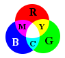

שיטות צבע: RGB, HSV ו-CMYK

RGB
- Red, Green, Blue
- אלה צבעי היסוד החיבוריים, מהם ניתן להרכיב כל צבע נראה
HSV
- H = Hue - גוון. לכל גוון (אדום, ירוק, כתום, כחול ירקרק) יש מספר בין 0 ל-255
- S = Saturation - רוויה. דומה לערבוב הגוון עם צבע לבן.
- V = Value - בהירות.
CMYK
- Cyan, Magenta, Yellow, blacK
- אלה צבעי היסוד החיסוריים, משמשים בהדפסה כלומר באור מוחזר.
- ניתן להגדיר צבעים בשיטה זו באמצעות דמות המדפסת בדיאלוג בחירת הצבע.
- השיטה אינה נתמכת עדיין ב-Gimp 2.2 - חסרון גדול למקצוענים.